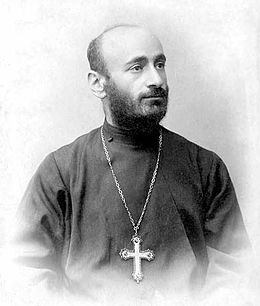
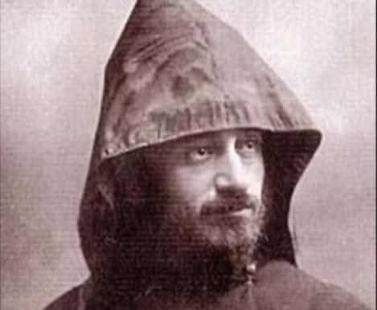
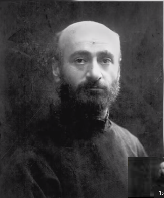
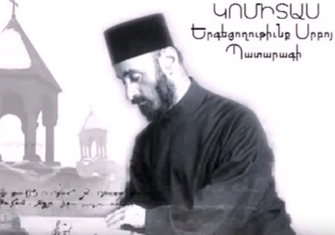
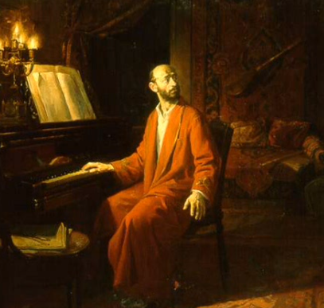
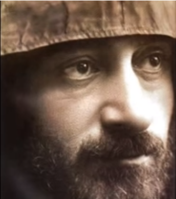

Կոմիտաս
Կոմիտաս օր մը ինծի ըսավ. «Հայկական 50 հատ խազ կա: Ես կկարծեմ, որ հայոց ձայնանիշը քանի մը ձայն կպարունակե իր մեջ» և ուրախությամբ վրա բերավ. «Ես գաղտնիքը գտեր եմ...»:
Կյանք
Կոմիտաս (Սողոմոն Գևորգի Սողոմոնյան, սեպտեմբեր 26, 1869, Քյոթահիա - հոկտեմբեր 22, 1935, Փարիզ), հայ երգահան, երգիչ, երաժշտական էթնոլոգ, երաժշտագետ, վարդապետ և ուսուցիչ, բանահավաք, խմբավար, մանկավարժ, հայկական ազգային կոմպոզիտորական դպրոցի հիմնադիր:1881-1893 թթ. սովորել է Էջմիածնի Գևորգյան ճեմարանում: 1894 թ. ձեռնադրվել է աբեղա և ստացել Կոմիտաս անունը։ 1895 թ. Կոմիտասին շնորհվել է վարդապետի հոգևոր աստիճան։ 1895-96 թթ. Թիֆլիսում կոմպոզիտոր Մակար Եկմալյանի ղեկավարությամբ ուսումնասիրել է երաժշտական տեսական առարկաներ, որից հետո՝ 1896-1899 թթ., ուսումը շարունակել է Բեռլինի Ֆրիդրիխ Վիլհելմ արքունի համալսարանում (ներկայումս Հումբոլդտ համալսարան) և Ռիչարդ Շմիդտի մասնավոր կոնսերվատորիայում: Կոմիտասի գիտական և ստեղծագործական գործունեությունը նոր էջ բացեց հայ երաժշտական մշակույթի պատմության մեջ: Հայ հոգևոր և ժողովրդական երաժշտությանը վերաբերող իր գիտական ուսումնասիրությունները Կոմիտասը ներկայացրել է Եվրոպայի մի շարք քաղաքներում (Բեռլին, Փարիզ, Ժնև, Լոզան և այլն), այդ թվում` Միջազգային երաժշտական ընկերության համաժողովներին, որի հիմնադիր անդամներից էր: Կոմիտաս-գիտնականը նպատակ ուներ աշխարհին ներկայացնել հայկական երաժշտական հարուստ մշակույթի ավանդույթները և ապացուցել, որ «հայն ունի ինքնուրույն երաժշտություն»: Կոմիտասի ստեղծագործական ոճը յուրահատուկ է իր տեսակի մեջ: Հիմնվելով հայ ավանդական երաժշտական մշակույթի առանձնահատկությունների վրա՝ նա հայտնաբերեց հարմոնիայի և պոլիֆոնիայի կիրառման նոր և հարուստ հնարավորություններ, որոնք պատշաճ էին հայ երաժշտական մտածողությանը: Նրա երաժշտական ժառանգությունն ընդգրկում է վոկալ («Անտունի», «Կռունկ», «Ծիրանի ծառ», «Ալ այլուղս», «Զինչ ու զինչ» և այլն), խմբերգային՝ ժողովրդական և հոգևոր («Անձրևն եկավ», «Լուսնակն անուշ», «Գութաներգ», «Հայր մեր», «Ով զարմանալի», «Այսօր ձայնն հայրական», «Էջ Միածինն ի Հօրէ», «Տէր, ողորմեա» և այն), և դաշնամուրային («Յոթ պար», «Մշո շորոր» և այլն) ժանրի ստեղծագործություններ: Կոմիտասի ստեղծագործության մեջ առանձնակի կարևորություն է ներկայացնում իր միակ ավարտուն մեծակտավ գործը՝ «Պատարագ»-ը արական կազմի համար: Կոմիտասն ունեցել է նաև օպերա ստեղծելու մի քանի մտահղացումներ, որոնք մնացել են անկատար:
Երգեր
|  | Ծիրանի ծառ |
|  | Քելե - քելե |
|  | Տեր ողորմեա |
|  | Գարուն |
|  | Ես սարէն կու գայի |
Ես եմ
Ես քու սերն եմ,
Սիրուդ ջերն եմ,
Մենավոր.
Ես եմ քո կին,
Դու՝ իմ հոգին
Հենավոր։
Ձայնդ հնչեց սիրո կայծակ շեշտակի,
Հոգիս շնչեց գարուն-փայլակ հեշտակի։
Շունչդ առա կուռ ծոցերով՝
Գրիչ դառա հուր բոցերով։
Ես բանաստեղծության մեջ զգում եմ սեր, ուրախություն։
Ի՞նչ մտքեր ծնվեցին բանաստեղծությունը կարդալիս:
Ինձ շատ դուր եկավ առաջին տունը`
Ես քու սերն եմ,
Սիրուդ ջերն եմ,
Մենավոր.
Ինչպե՞ս կվերնագրեիր բանաստեղծությունը:
Կոմիտասի սերը
ԱՇՈՒՆ ԿՅԱՆՔ
Աչքի առաջ,
Հառաչ-հառաչ,
Խորհրդավոր տերևներ,
Բունեն ընկած կեղևներ,
Հողի վրա,
Դեղին հուսով
Կողի վրա։
Լուռ, անտերունչ,
Խուլ, անմռունչ՝
Չորով-փորով կեռ ծառեր,
Ծռով-փռով լեռ քարեր,
Եվ հենավոր՝
Սարի կողին,
Ե՛վ մենավ
Ես զգում եմ աշունը, տեսնում եմ այս բանաստեղծությունը և պատկերացնում եմ իսկական աշունը:
Այս բանաստեղծությունը կարդալիս սկսեցի մտածել, որ աշունն այնքան էլ վատը չէ, ես բակ իջնում եմ ձմռանը և գարնանը, բայց հիմա ուզում եմ իջնել նաև աշնանը:
ՆՈՃԻՆԵՐՆ ՈՒ ՄԱՅՐԻՆԵՐ
Մուգ նոճիներ միգապար՝
Ճամփի վերև սիգապար՝
Դեպի երկինք հրազայր,
Կանաչ հուսով սրածայր,
Ճյուղերն ի վեր կոնավոր՝
Կարծես լինին տոնավոր։
Կուսատերեւ մայրիներ՝
Հուսաբեղուն այրիներ,
Փշերն աչքին պիշելով՝
Արև օրեր հիշելով,
Քարերի ծոց պատառել
Ամպերի գոգ կատարել։
Նկարներ
.jpeg)
.jpeg)
.jpeg)
.jpeg)
.jpeg)
.jpeg)
.jpeg)
.jpeg)
.jpeg)